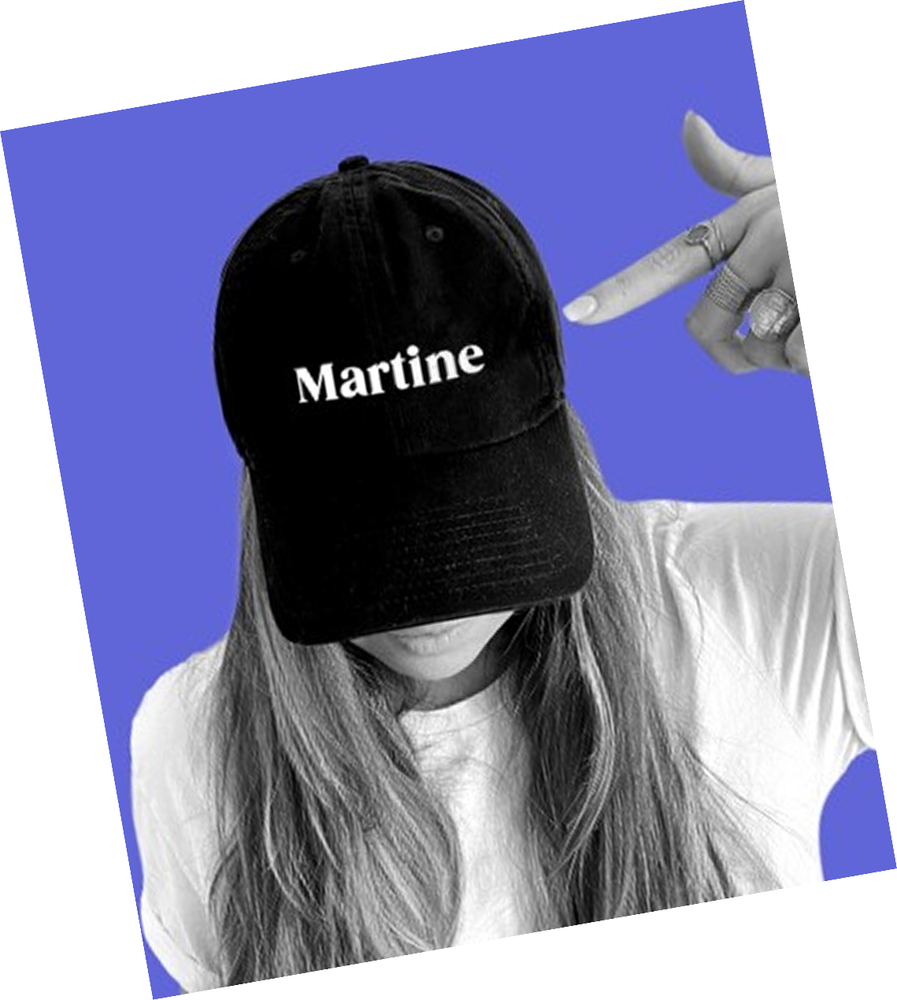

La conférence / keynote
45 à 60 min pour secouer une salle. Événement, séminaire, école, journée thématique. Thèmes : sortir du lot sans budget, bâtir une communauté engagée, entreprendre au féminin sans moyens.
Réserver une conférence →J'ai créé un univers de marque à partir de rien : un réseau social entre femmes, bootstrappé, sans budget. Aujourd'hui j'apprends à vos équipes, vos étudiant·es et vos startups à construire le leur (marque, produit, communauté), sans dépenser des fortunes.
Parlons de votre besoin Une question avant ? Écrivez-moi →
conférences & ateliers ⚡45 à 60 min pour secouer une salle. Événement, séminaire, école, journée thématique. Thèmes : sortir du lot sans budget, bâtir une communauté engagée, entreprendre au féminin sans moyens.
Réserver une conférence →2 à 3h, les manches retroussées. Le groupe repart avec un plan d'action, pas des post-it oubliés dans un tiroir. Pour une équipe marketing-comm, une promo d'incubateur, une classe.
Organiser un atelier →Plusieurs sessions pour transformer une équipe, une cohorte ou une promo en profondeur, pas en surface. Pour incubateurs, écoles, entreprises, accélérateurs.
Construire un programme →Pour les incubateurs et écoles dont les porteurs de projet doivent sortir un MVP (une première version concrète et fonctionnelle : site, appli, plateforme), Rebeca peut intervenir en complément.
Rebeca, 10 ans de code, une vraie Queen. Elle a fait ses armes chez Decathlon et Leroy Merlin avant de voler de ses propres ailes. C'est elle qui fait tourner l'appli Les Martines depuis 1 an et demi.
elle passe les choix techniques au crible, aide à prioriser le MVP (le vrai, pas la wishlist) et oriente vers la bonne approche : no-code, low-code ou sur-mesure, selon le budget et les compétences de l'équipe.
les porteurs de projet de vos incubateurs, accélérateurs ou promos qui doivent sortir une vraie première version, pas juste une maquette.
en complément d'un atelier ou d'un programme sur-mesure, en sessions dédiées. On en discute ensemble selon vos besoins.
Moi la stratégie, elle la technique.
👑Voir le travail de cette Queen du code→Je l'ai fait, à partir de rien, sans budget et sans jamais montrer mon visage sur les réseaux. Pas de théorie pure, uniquement du vécu et des stratégies testées sur le terrain.
Je ne construis pas que des marques, je construis des univers : identité, ton of voice, communauté. La preuve, c'est Les Martines, que j'ai créé de zéro.
Une direction artistique forte, forgée sur des marques réelles (agence, start-up, Les Martines), pas sur des études de cas théoriques.
Un ton franc et énergique qui réveille une salle, capte l'attention immédiatement et parle vrai sans détours corporatifs.
Les Martines, le projet que j'ai créé de zéro, vu dans :


Sur devis, selon le format, la durée et vos besoins.
Conférence / keynote
45 à 60 min
Pour marquer les esprits sur un événement ponctuel, un séminaire ou une journée thématique.
Atelier / masterclass
2 à 3h
Pour repartir avec un vrai plan d'action, pas juste des notes prises en vitesse.
Programme sur-mesure
Plusieurs sessions
Pour transformer une cohorte ou une promo dans la durée, pas en un seul shot.
Idéalement 4 à 6 semaines avant, le temps de cadrer le contenu ensemble. Mais écrivez-moi même si c'est plus serré, on regarde ce qui est possible.
Les deux, selon votre format, votre lieu et votre budget. On en discute à l'appel.
Ça dépend du format (conférence, atelier, programme) et du contexte (école, incubateur, entreprise). Tout est sur devis, on en parle ensemble à l'appel découverte.
Oui. Étudiant·es, porteurs de projet en incubateur, équipes marketing-com... le fond s'adapte, le ton reste direct et concret.
On bloque un appel de 20-30 min pour cerner votre besoin, je vous envoie ensuite une proposition sur-mesure.
Un appel découverte de 30 minutes. On cadre votre besoin ensemble, je vous envoie une proposition claire.
Parlons de votre besoin Une question avant ? Écrivez-moi →